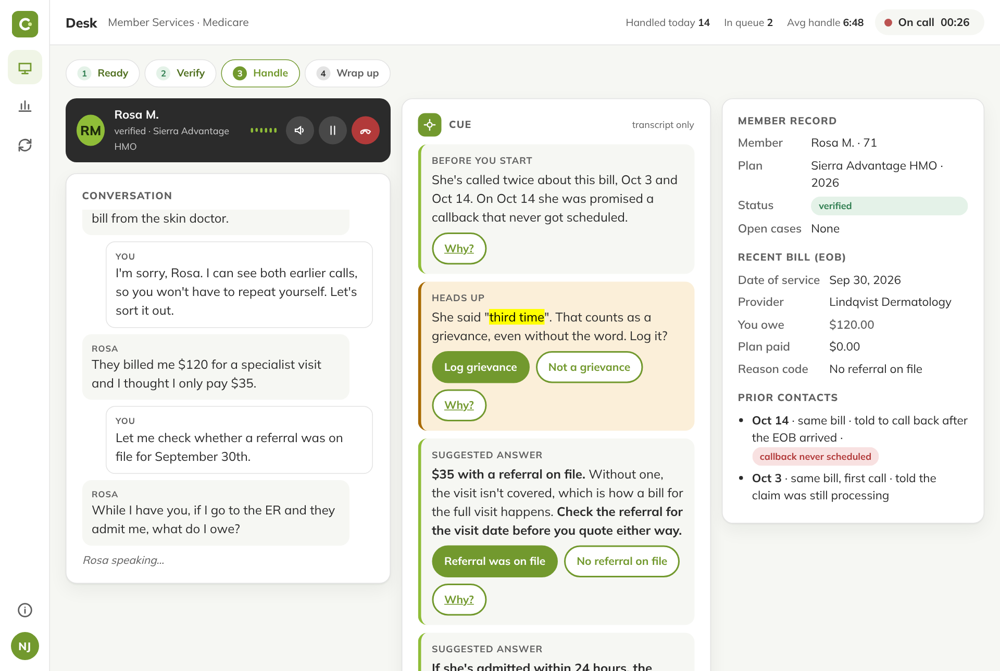
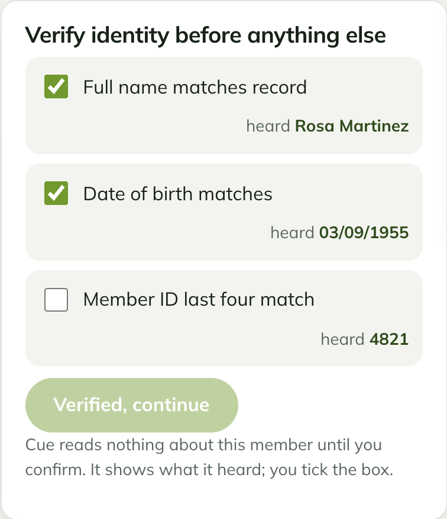
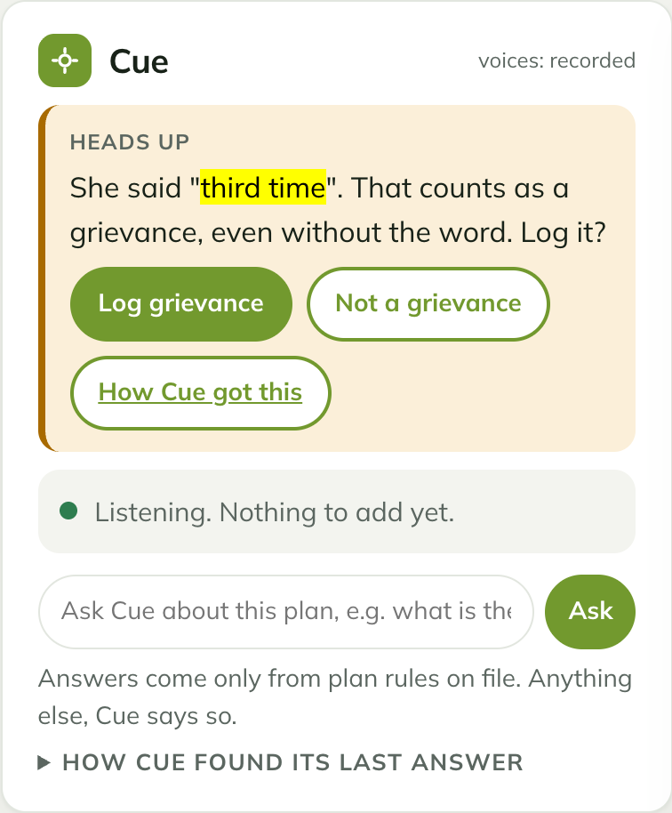
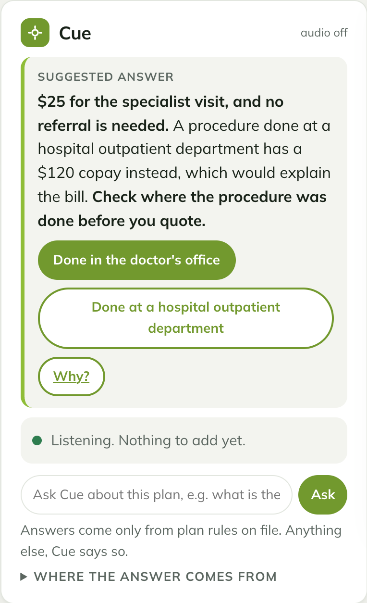
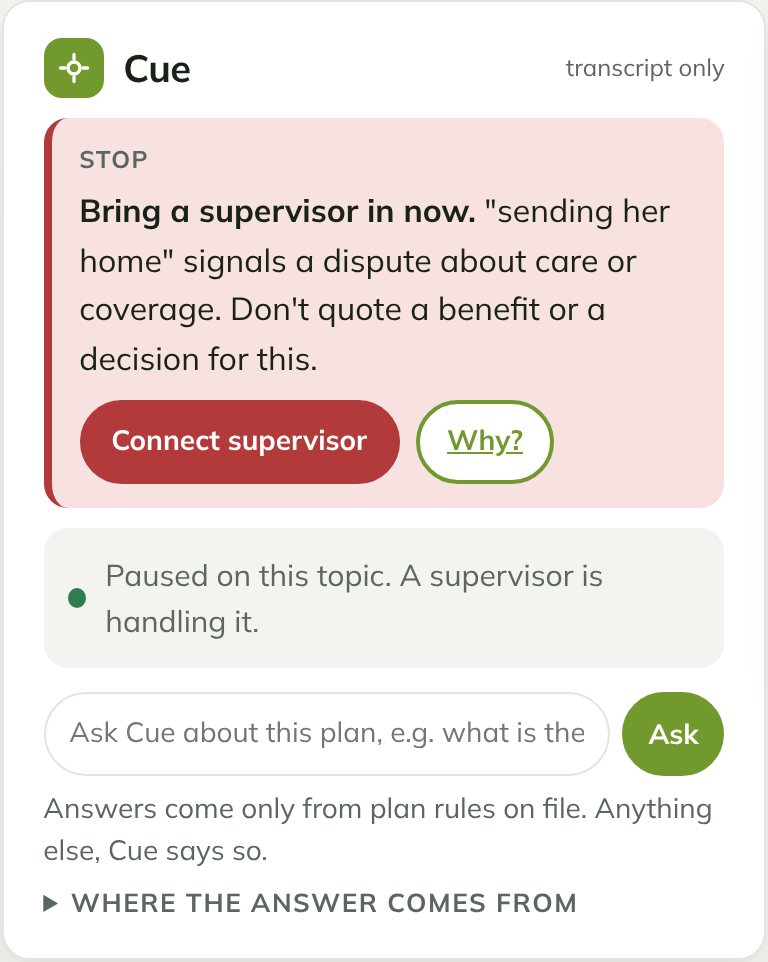

For member-service advocates at a Medicare Advantage plan
An assistant that hears what the member means, answers only from the plan's own rules, and stops hard when a person must decide.

One call, four beats
Rosa, 71, is calling for the third time about a bill. Four minutes, four moments where the assistant earns its place.
Cue shows what it heard beside each check. The advocate ticks the box. Identity is a human decision.
Rosa Martinez. March 9th, 1955.

Cue highlights the sentence, says why it counts, and asks the advocate to log it. Either answer goes in the note.
This is the third time I've called about this bill.

A specialist visit is $25, but a procedure done at a hospital outpatient department is $120. Cue walks from one rule to the next and says what to check before quoting.
They billed me $120 for the skin doctor and I thought I only pay $25.

Cue drafts nothing, pauses every other cue, and offers one button: bring a supervisor in. The supervisor gets the plan's appeal rules with page links, files a fast-track appeal with the Quality Improvement Organization on the call, and the case lands on the dashboard.
They are sending my mother home on Wednesday and she is not ready.

Then a note and a recap, drafted from this call only. The advocate approves one and sends the other.
Tested before advocates use it
Every version of CureCue is run against example lines members say, each with the right response written down in advance. Release 2 passed its first test of 24 English lines. When we added Spanish lines and calls through an interpreter, it missed every Spanish call that needed a supervisor. Release 3 fixed this. Now each language is checked separately, and a big gap between them stops the release.
How it works
The stop runs first on every turn. Then one owner per turn, with only the context that owner needs.
One member, one plan, four minutes, with voice.
Demonstration only. Plan rules and figures come from the public 2026 documents of a real Medicare Advantage HMO-POS plan (sources). Members, providers, calls and records are fictional. Not affiliated with or endorsed by any health plan.